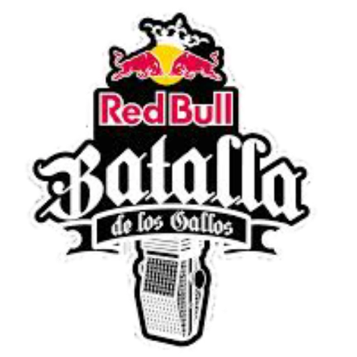
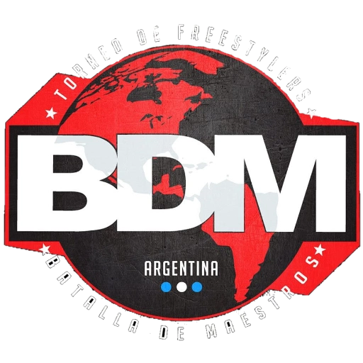
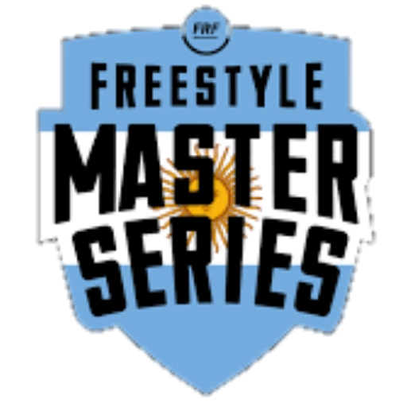

Torneos
Algunos torneos importantes de Freestyle:

El quinto escalón:
- Fue una competencia de batallas de rap fundada y organizada en el Parque Rivadavia del barrio de Caballito en la Ciudad de Buenos Aires, Argentina. Era albergada por el rapero YSY A (Alejo Acosta) y el presentador de radio Muphasa (Matías Berner). Se disputó por primera vez en marzo de 2012,y acabó en noviembre de 2017 con un evento en el Microestadio Malvinas Argentinas.

Red Bull Batalla:
- conocida originalmente como Red Bull Batalla de Los Gallos o BDLG, y ahora como RBB, es una competición anual de freestyle rap que comenzó en el año 2005, en la cual participan todos los países de habla hispana.Su nombre se debe a que está patrocinada por la bebida Red Bull.

Batalla de Maestros(BDM):
- es un torneo hip hop que tiene por objetivo buscar a los mejores exponentes de la improvisación.
Este torneo se caracteriza por tener un caracter serio, y no lucrativo como lo hacen otras organizaciones,
y especialmente diseñado para sacar a la luz nuevas promesas de esta rama.

Freestyle Master Series (FMS):
- es la primera liga profesional de rap estilo libre de habla hispana. Es una competición joven, de inicios de la década del 2010,y The Urban Roosters fue el equipo que ideó y creó un sistema de calificación de los competidores. Su ranking se asemeja al del tenis.Y es que el ranquing ATP
elabora la lista de posiciones de los tenistas teniendo en cuenta las puntuaciones que consiguen en función de los torneos a los que participan.

God Level Grand Slam World Edition:
- conocido como God Level Grand Slam, es la primera edición internacional en su tipo, ya que será con equipos de 4 Mc´s, el evento esta organizado por la tienda de ropa llamada Godlevelstore, fundada por el rapero Omega